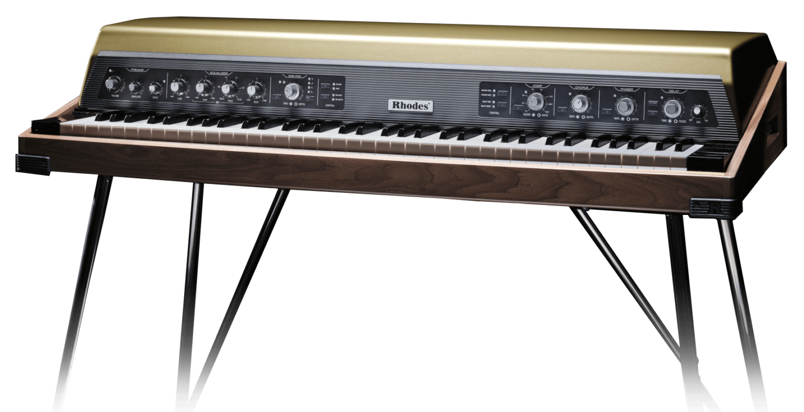
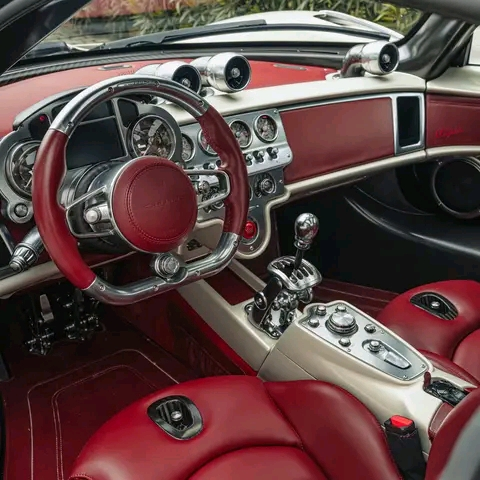

Conversation
Ideas exchange News review
 Ideas and News: EQUIPMENT
Ideas and News: EQUIPMENT

Technics DJ Stereo Headphones EAH-DJ1200
With evolved functionality, design, and sound quality, the EAH-DJ1200 headphones build upon the legacy of the RP-DJ1200 to take DJ culture to a new level; features clear, detailed sound,
a lightweight on-ear design with 270-degree swiveling mechanisms for free-style single-side monitoring, locking detachable cord, and more. Taking DJ culture to the next level – in headphone form. The Technics EAH-DJ1200 Stereo Headphones have been designed with ideal functionality and audio quality for professional DJ use. Features clear, detailed sound, a lightweight on-ear design with 270-degree swiveling mechanisms for free-style single-side monitoring, locking detachable cord, and more.
Detailed, Balanced Sound Even in High-Volume Surroundings with 40mm Driver
Lockable 270-degree swiveling mechanisms for single-side monitoring
High durability to withstand harsh usage by professional DJs.
Locking detachable cord mechanism avoids accidental detachment of the cord in the middle of a set
Ear pads and head pads designed for maximum comfort and minimum wear from sweat and everyday use
The newly developed driver uses a 40mm-diameter CCAW voice coil. It achieves clear, detailed sound, and high-durability input (2,500 mW) with no distortion even at high volumes. Also, because the sound is well balanced from low to high ranges, DJ play in high-volume surroundings is not buried in noise and monitoring is comfortable.
The EAH-DJ1200 is a lightweight on-ear type design. The housing is equipped with lockable swiveling mechanisms so the headphones can be used for monitoring with one ear. It adapts to all styles of monitoring by DJs. The headphones can be folded compactly for easy portability and storage.
The detachable cord is easy to clean and maintain. A locking mechanism is provided to prevent accidental detachment of the cord during use. The stretchable coiled cord, coupled with the L-type plug which resists internal wire breakage, enables extra ease of use and high durability. It withstands harsh and intense usage by professional DJs.
Based on the RP-DJ1200, which remained as a long-selling model in the market for more than 20 years, the EAH-DJ1200 sports a contemporary black color scheme for an updated appearance. Armed with high durability and excellent functionality, the EAH-DJ1200 matches perfectly with the SL-1200MK7, which features a matte black finish.
Ideas and News: MUSIC
180g Vinyl will be ready to be shipped from May 25th 2024. Bandcamp copies are limited and this release will also be available in shops worldwide from 29th May so you may find that more convenient if you are not in the UK.
For those of you in South Africa please send us a personal message before purchasing for details as it is a different process. This enables us to charge shipping at £5.36 instead of £18.10 per record. Records will be shipped once we have 7 orders so it may be an idea to bulk buy as a collective.
Inner Shift Music and sister label Common Dreams are labels focused on quality electronic music. We like music that goes beyond the typical dance track. Tempo or style comes second to originality and heart-felt music. The artists are like-minded individuals with similar ideas and vision. Thanks for listening.
Ideas and News: EVENTS
Time4House presents the 7th annual #TheMeatPicnic
Venue: Fountains Valley nature reserve (Denneboom lapa)
Date: 14 September 2024
Ideas and News: GEAR
THE RHODES MK8
THE ULTIMATE IN RHODES SOUND AND FEEL
Harold Rhodes’ legendary electro-mechanical tine piano returns. Precision built in the UK with the finest hand-selected materials.
Optimising the iconic sound of the Rhodes piano, the MK8 offers considerable improvements in tone, touch, intonation and dynamics. All critical components – including tines, pickups, dampers and pedal mechanism – have been redesigned from the ground up, using only the highest quality materials and the very best in contemporary manufacturing techniques. KEYBOARD -
Precision-manufactured by internationally renowned Kluge Klaviaturen GmbH (Steinway Group), the Rhodes MK8’s keyboard offers unparalleled expression and a nuanced piano-like feel. SPECIFICATIONS -
73-note (E8-E80) Rhodes custom spruce keyboard by Kluge Klaviaturen GmbH, oak and beech key frame. ONBOARD EFFECTS -
The MK8 offers you the opportunity to dial up the effects of your choice with inbuilt VCA analogue compressor and low noise analogue stereo bucketbrigade effects: chorus, phaser, delay. SPECIFICATIONS -
Rhodes custom stereo effect processor: analogue compressor, phaser, chorus, delay. True bypass. Expression pedal control of phaser speed, chorus speed, delay time, delay feedback. PREAMP -
The custom Rhodes engineered MK8 analogue preamp features parametric EQ, independent drive, envelope control, wah, new vari-pan with 4 waveshapes, audio rate modulation capabilities and dual expression pedal control inputs. SPECIFICATIONS -
True analogue signal path. Volume, drive, envelope controls. Expression pedal control of volume, mid sweep (wah), pan speed, pan depth. Rhodes custom analogue tri-band (low/mid/high) active equaliser (+/- 15db range). Sweepable parametric midrange. Rhodes custom vari-pan with variable rate/depth with 4 wave shapes and audio-rate modulation. CUSTOMISE -
With external design by Axel Hartmann, the MK8 closely echoes the classic lines of the much loved Rhodes MK1 piano, whilst inviting a level of owner customisation never before offered on a Rhodes.
Choose from solid and custom sparkle colours for the lid, along with a selection of beautiful finishes for the front panel, case, pre-amp panel, pedal and rear grille. 
Ideas and News: TECH
Apple AirPods with Personalized Spatial Audio
It’s magic, remastered.
With Personalized Spatial Audio that places sound all around you, Adaptive EQ that tunes music to your ears, and longer battery life that charges up in a snap. It shrugs off sweat and sprinkles, and delivers an experience that’s simply magical.
Taking sound in totally new directions. Personalized Spatial Audio with dynamic head tracking places sounds all around you to create a three-dimensional listening experience for music, TV shows, movies, and more — immersing you in sounds from every direction so it feels like you’re in your very own concert hall or theater.
Bass hits an all-time high. An Apple-designed dynamic driver, powered by a custom amplifier, renders music in exceptionally detailed sound quality — so you revel in every tone, from deep, rich bass to crisp, clean highs. Music on a more personal note. Adaptive EQ automatically tunes music to your ears. Inward-facing microphones detect what you’re hearing, then adjust low and midrange frequencies to deliver the rich details in every song, customized for you in real time.
Mute the breeze. Covered in a special acoustic mesh, an inset microphone in each earbud minimizes wind noise when you’re on a call — so your voice is always heard loud and clear.

You heard it here first. HD voice quality for FaceTime. Connect on FaceTime in crisp, HD quality with an AAC-ELD speech codec. And with support for Personalized Spatial Audio, Group FaceTime calls sound more true to life than ever.
Style from ear to ear. With a contoured design and shorter stem, AirPods are designed to direct sound into your ears — in a refined look anyone can appreciate.
Pinch- perfect control. The force sensor gives you even more control over your entertainment. Press once to play and pause songs or mute and unmute yourself on calls, and press twice to skip through songs or end a call.
Sprinkles? No sweat. AirPods, the Lightning Charging Case, and the MagSafe Charging Case are rated IPX4 sweat and water resistant, so they’ll withstand anything from rain to heavy workouts.
A case full of energy. Both the Lightning Charging Case and the MagSafe Charging Case give AirPods up to 30 hours of listening time. The beauty of the MagSafe Charging Case is its compatibility with MagSafe and other wireless chargers — for power in a click.
Up to 6 hours of listening time with one charge.
Up to 30 hours of total listening time with the case.
An instant connection. Place AirPods near your iPhone or iPad and tap Connect to pair with every device in your iCloud account. If you’re playing music on your Mac, you’ll be able to answer a call on your iPhone — without having to switch devices.
A great sense of detection. An enhanced skin-detect sensor knows the difference between your ear and other surfaces, so audio only plays when you’re wearing AirPods — and pauses when they’re in your pocket or on a table.
Always-on “Hey Siri.” Play music, make calls, get directions, or check your schedule simply by using your voice. Just say “Hey Siri” to activate your favorite personal assistant and stay on top of everyday tasks
Announce Notifications. Siri can read your important messages or alerts as they arrive — and you can even reply to messages with just your voice.
Enhanced Find My. Track down your AirPods with the Find My app. See how close they are with proximity view, get separation alerts if they’re out of Bluetooth range — or have them play a sound so you can locate them.
Audio Sharing. Easily share a song or show between any two sets of AirPods. Simply bring AirPods near the iPhone, iPad, or Apple TV you’re listening to and connect instantly.
Ideas and News: FASHION
Dolce & Gabbana Portofino Cuore sneakers
R14.000 ZAR
Details:
As an ode to most loved-up day of the year — Valentine’s Day — Dolce&Gabbana has reworked its iconic Portofino sneaker model. Love heart red, optical white and Nero Sicilia lend themselves to a unique, youthful sneaker with a swoon-worthy street allure. The handmade graphic-look heart element finds pride of place, in addition to the crossover DG detail, small stars and the phrase “I love you” provided in various languages each element is ironic and playful to promote fun and carefree love-filled moments.The Limited Edition sneakers are made exclusively for you and will be delivered for free within 3 weeks.

Calfskin Nappa leather upper
Flat laces
Calfskin footbed with branded label
Branded rubber sole
Item comes in themed packaging
Made in Italy
This Item cannot be returned.External composition: 100% Calfskin

Ideas and News: AUTOMOBIL

PAGANI UTOPIA
Pagani, Act III -
Horacio Pagani’s company is now in its third decade, and here is its third creation. The C8 project, the Zonda, began to establish the legend. The C9 project, the Huayra, built upon this on a global scale, integrating the use of active aerodynamics and Carbo-Titanium.
What then, could its third model, codenamed C10, add? More power, increased performance, a better structure and aerodynamics? Absolutely, but what else? Above all, you need a goal. 
AIMS AND AMBITIONS - The alchemy of pleasure, the equation of beauty … What would be important for the next Pagani hypercar? Horacio Pagani certainly had his own ideas, but he asked his closest clients, those who eagerly await each of his creations, to express their wishes. They already had exceptionally fast and beautiful cars, what were they still missing? Three terms stood out almost each time they replied: simplicity, lightness and the pleasure of driving. In its development, the C10 project therefore went against the main trends of the time. No heavy batteries, no hybrid power, just a wonderful V12; no dual-clutch system, just a pure seven-speed manual or automated transmission. All this to ensure that the car would respond better than ever to its driver’s every action and work with them to be the purest form of driving, a ‘classic’ experience defined in new ways.
With a brief like this and such high ambitions, what name could be chosen for the car that would embody these principles? Utopia… For the philosopher Thomas More in 1516, Utopia was a place that did not exist, and ever since the name has been given to the idealized places of which we dream. But for those who make their own future, for creators, utopia exists, it is ‘merely’ a case of finding it!WHAT WE SEE - Every Pagani begins with an aesthetic shock. Utopia radiates simplicity. It asserts itself straightaway, affirms and imposes its lines, which are so typical of Pagani but at the same time it is so different from anything they have offered us before. A shape that is more flowing and curvaceous. From the windscreen, with its rounded upper edges, to the details of its wings and bonnet, its softer contours give it a new expression, a new outline. A shape smoothed and refined over a long time, but which sticks in your memory from the first time you see it. The most difficult part of the process for Pagani has been to follow as closely as possible the original intention of creating a timeless design object, instead of one that follows the fashion of the period.
The new car has very few aerodynamic add-ons yet is more efficient than ever. Where some hypercars have a multitude of spoilers, Utopia incorporates the function of these appendices into its overall shape, achieving greater downforce and reduced drag solely by means of its design.
The details of its styling are few in number, but each is so carefully executed that it can be admired in its own right: technologically advanced, their shape is inspired by objects from the 1950s like the streamlined headlamps of Vespa scooters or the fittings of Riva speedboats. The forged wheels have a turbine-shaped carbon fiber extractor which draws hot air away from the brakes and reduces turbulence under the body. Mounted on carbon-ceramic discs, the brake calipers have a new, lightened design.
The role of Pirelli tires is to transfer the exuberant torque to the ground efficiently and bring the finishing touches to the car’s exceptional road feel, thanks to the unusually large 21” wheels in the front and 22” wheels in the rear, which triggered new creativity and distinguishing design freedom on the surrounding bodywork. The silhouette of Utopia can be seen on their sidewalls, demonstrating just how much they have been specially developed for this car.
The side mirrors, as if suspended in mid-air, thanks to the airfoil-shaped support are set apart from the body for better aerodynamic penetration, showing the meticulous optimization that was carried out on them in the wind tunnel. The rear lights float at the sides of the rear wings, set into the air extractors. Each part of them, so beautifully crafted, could be displayed in the window of a jeweler’s shop.
The titanium quad exhaust, a personal monument and signature of the brand, is still present. It has a ceramic coating, in order to dissipate the heat efficiently, but still sets the weight just above 6 kilograms for the complete system.
A GLANCE TO THE FUTURE, A TRIBUTE TO THE PAST - A car may be compared to a sculpture, but opening the door changes everything; a sculpture, yes, but one you can sit in. The interior of Utopia is even more original, if that is possible, than its exterior shape.
Neither modern nor retro, it is timeless. There are no screens apart from the minimal display in front of the driver; big screens would have been easier to fit and would have saved a lot of effort in the design, but it would have taken away much of the beauty. All the instruments are purely analog and each of the easy-to-read dials subtly reveals part of its mechanism as if it were revealing the skeleton movement.
For Pagani, every component needed for the car to function is an opportunity to be creative. Even the steering wheel has been reinvented: it is fashioned from a solid aluminum block, from the spokes and hollow rim to the steering column boss, which contains the airbag. The pedals are also made from a single block of metal, while the gear lever mechanism is still exposed but more sophisticated than ever. All this with proper obsession paid to ergonomics, efficiency and ease of access.
WHAT MAKES IT WHAT IT IS - To reach this very simple final shape, the process has never been as complex. For six years, from the first sketches and computer calculations until the definitive shape was frozen for the carbon fiber molds, its internal airflows were perfected through endless hours of research in the wind tunnel and countless changes, one touch at a time.
Utopia takes advantage of the mysteries of aerodynamics to maximize sure-footed handling and stability at any speed, however high. Its active aerodynamics, combined with the electronically controlled shock absorbers, ensure the optimum dynamic behavior in all driving conditions. The double-wishbone suspension, made from aerospace aluminum alloy, benefits from the lengthy development work carried out on the R, the track-only version of the Huayra. But Utopia, a car designed for road use, can cope with surfaces for daily use.
The carbon monocoque used on previous Pagani models sets the standard in terms of its strength, lightness and build quality. Pagani has chosen to consolidate its existing strengths, to improve how its fibers are woven and to constantly invent new composite materials such as Carbo-Titanium and Carbo-Triax. On top of that, a new type of A-class carbon fiber has been developed specifically for aesthetic applications such as the bodywork, providing 38% of additional stiffness with the same density.
A high-performance car must not only please its buyer, but support them and provide all the safety they require, without their need to ask or worry about it. Many exemptions are granted to very low-volume manufacturers, but Pagani made it a point of honor – once again – to build its cars and meet the most stringent regulations in the world, in every respect, starting with safety. Utopia passed more than 50 severe crash tests, from development to pre-tests and homologation approval, to reach its global certification.

AT YOUR SERVICE - The Pagani V12 engine, a 6-liter biturbo specially built by Mercedes-AMG for Pagani, is the result of an enormous development work: it delivers 864 bhp and, above all, a prodigious 1100 Nm of torque. It revs higher and is both more flexible and more powerful while meeting the most stringent emissions regulations, including those in force in California.
For the transmission the choice was a philosophical one. It would not be a dual-clutch transmission which is efficient, but heavy and robs the driver of the ability to set the pace of the car’s acceleration. Instead, Pagani turned to the most prestigious motorsport and high performance automotive transmission manufacturer, Xtrac, to develop the quickest shifting gearbox with helical gears possible. It is compact, light and transversely mounted for an optimized center of gravity.
Moreover, in order to best match the wishes expressed by Pagani enthusiasts, its aficionados, a virtual manual would not be acceptable so a real seven-speed manual transmission has been developed. It was not an easy task to design such a gearbox with synchronizer rings and a mechanism able to handle 1100 Nm of torque adequate for a pure manual application, but it was an essential requirement for Utopia.
However intelligent automatic transmissions may have become, nothing can replace the driver’s own mastery of the gearchanges: the prevailing logic is his alone, each change up or down is totally unique and depends solely on his decision and good judgment, the exact combination of circumstances, the nature of the road and the mood of the moment.
THE STARTING POINT - As we discover his latest work, it is the path taken by its creator that fascinates us. Horacio Pagani builds the cars he has dreamt of. And it is to fulfill his highest aspirations, those closest to the impossible, that, as a very conscientious engineer, he seeks to serve the dreamer. In the land of dreams, you need a guide: the great Leonardo da Vinci has always been a crucial figure for Pagani. It is under Leonardo’s aegis that he has always believed that it is possible to combine art and technology.
Can you think of any more demanding mentor? An artist and an inventor, Leonardo, one of the greatest portrait painters of all time, was also interested in anatomy. It is not the case for Horacio to compare himself to the Florentine genius but of following his path: Leonardo constantly combined technical inspiration with his love of beautiful shapes.
Horacio Pagani is an artist, the car is his preferred way of expressing himself. When he draws something, however beautiful it is, the shape he creates is the result of the function it will perform. For him, a shape cannot be elegant if it is technically incorrect. And when the technical difficulty has been overcome, its beauty can be found in its solution.
Horacio has always gone about things in the same way, that is just how he is: the creativity and the act of solving real problems, take the shape in him of an expression of painting or poetic harmony. He has always been a composer, and for a long time as a designer he was a soloist, but now he has become a conductor and has learned to see his ideas carried out by his team – young men and women who will then contribute with their own ideas to the common masterpiece, and on which he can put his signature with pride.
NEW STRENGTHS - From its origin, the situation has changed considerably; the firm was self-sufficient in 1999, with just 25 employees in total and so much to be done; but this is no longer appropriate. Pagani, a function-focused company, remains essentially a family-sized business but today employs 180 staff. Engineers specializing in all fields, designers and highly qualified technicians occupy the Art & Science Research Center, where the Zondas originally came into being, whereas the new facility is home to the production process. Turning out 50 cars a year, it is closer to a sartorial atelier than an assembly line.
Nearly 25 years ago, the Zonda was designed and built by a very small team with few resources. Imagine what an intuition can grow into, nurtured and developed by the new strengths Pagani Automobili now possesses. Whatever the decision, whatever the direction its creative ideas may take, this little company is capable of realizing them, quickly and well, with an unrivaled standard of quality. Its design, prototyping, development and production work is worthy of the top racing teams, but at the service of limited-production cars. The first series of Utopia coupés, which have already been assigned to privileged enthusiasts, will be built in 99 units.
Each car represents the natural and necessary convergence of multiple disciplines, each of which combines technology and aesthetics. It is the mastery of this process which Pagani has taken to new heights of excellence.Pagani’s story continues, Pagani’s work goes on…
Ideas and News: GADGET

FUJIFILM X-T5
Photography First -
X-T1 was originally released in 2014 to celebrate Fujifilm’s 80th anniversary.
It would go on to lead a mirrorless camera revolution.
Almost a decade and five generations later, Fujifilm’s latest imaging technology has come to X-T5, bringing photographers unrivalled image quality in a timeless, classic, and beloved camera body.
Five Generations of Technological Evolution
Fifth-generation X-Trans CMOS 5 HR sensor and X-Processor 5 bring the most advanced imaging technologies ever to X Series
High Resolution 40.2MP BSI Imaging Sensor
Twice the processing speed of X-Processor 4
.jpg)
Feature 1 - Dial operation The essence of photography
Feature 2 - Three-way tilting LCD Versatility for all occasions
Feature 3 - 557g compact body Enhanced mobility.
Three top-plate dials - Three dials control ISO, shutter speed, and exposure compensation from the camera’s top-plate. Together with the aperture ring on most XF lenses, all exposure settings can be checked and adjusted before powering on the camera. Create with confidence and concentrate on making an image.
Lightweight, high performance - X-T5 features a five-axis in-body image stabilization (IBIS) system that provides up to 7.0 stops of compensation and a 3.69 million dot EVF with an 0.8x magnification ratio. Despite this, the camera body only weighs 557g (1.23lb). Dials and buttons provide easy operation, letting life’s most precious moments stand a chance of being documented to see another day.
Three-way tilting LCD - A three-way tilting LCD offers enhanced versatility, particularly when working at waist level or in portrait orientation. The combination of tilting LCD and center viewfinder aligns the lens, camera, and photographer on the optical axis, for a more comfortable and intuitive image-making experience.

19 Film Simulation modes inside of X-T5 digitally replicate the look of the classic photographic film stocks developed by Fujifilm for over 85 years. Reproduce the classic colors and tones that Fujifilm are known for, or add an artistic flair and start to Build Your Legacy.
White Balance - Fine adjustments can be made to Auto White Balance (AWB) by selecting one of three modes: Auto, White Priority, and Ambience Priority. Set to White Priority, white is more likely to be reproduced as white under incandescent lighting. However, when Ambience Priority is set, scenes will be photographed with the natural lighting characteristics of the scene preseved. Under incandescent lighting, this will generally result in images with warmer white tones.
AWB driven by AI technology - New deep-learning AI technology optimizes Auto White Balance performance in X-T5 by accurately identifying warm, orange-tinged colors to assist with the camera’s Auto White Balance accuracy.
Subject-detection autofocus - X-Processor 5 features subject-detection AF that is built using Deep-Learning AI Technology. In addition to providing incredible AF tracking and detection for human faces and eyes, X-T5 can now also automatically detect and track a broad range of subjects, which include animals, birds, cars, motorcycles, bicycles, airplanes, and trains. This allows photographers to concentrate on composition and creativity, confident that X-T5 will track focus accurately.
Updated AF algorithm - X-T5’s higher pixel count increases the number of phase detection pixels, which improves AF-S focusing accuracy on subjects including landscapes and portraits. The camera also incorporates an improved AF prediction algorithm, newly developed for the X-H2S, enabling stable focusing even when using AF-C.
A World of Detail 160MP Pixel Shift Multi-Shot - X-T5 features Pixel Shift Multi-Shot with the help of the Pixel Shift Combiner software, can produce a single, ultra-high-resolution 160MP image with a single touch of the shutter button. Using in-body image stabilization to shift the sensor by a half pixel between each frame, X-T5 precisely makes 20 frames to ensure every red, green, and blue pixel has the same information. The result is a final image with almost no false colors visible.
1/180,000 sec shutter speed - X-T5 has a maximum electronic shutter speed of 1/180,000, an increase of approximately 2.5 stops compared to other X Series cameras. Use it with wide apertures in extremely bright environments for more creative options, or to freeze action at the perfect moment.
ISO 125 standard sensitivity - X-Trans CMOS 5 HR has a more light-efficient pixel structure. ISO 125 – previously an extended sensitivity – is now available natively.
Supports HEIF image format - X-T5 supports the HEIF image format, which delivers 10-bit image quality in files up to 30% smaller than standard JPEGs. The next chapter in delivering high-quality results straight out of camera has officially begun for X Series.
Increased battery life - Thanks to the reduced power consumption of the X-Processor 5, the battery life for still images has been significantly increased from approximately 600 to 740 frames* compared to the X-T4.
Highly reliable, weather-resistant body - X-T5 features 56 weather-sealed points for high levels of dust and moisture resistance. It can also operate in temperatures as low as -10°C (14°F).
6.2K/30p 4:2:2 10-bit - 6.2K movies can be recorded internally at 30p in 4:2:2 10-bit color, delivering high-definition footage with rich color detail.
F-Log2 support - In addition to F-Log, X-T5 also supports F-Log2, which records an expanded dynamic range of 13+ stops.* This range is wider than current F-Log, broadening post-production potential.
RAW output via HDMI - When combined with an ATOMOS HDMI device, RAW video output from the X-T5 can be recorded as 12-bit Apple ProRes RAW at resolutions up to 6.2K and frame rates up to 29.97fps. When combined with Blackmagic Design Video Assist 12G, RAW video output from the camera can be recorded as Blackmagic RAW at resolutions up to 6.2K and frame rates up to 29.97fps.

Advanced operation and controls -
Dual SD card slots - X-T5 features dual SD card slots, both with UHS-II compatibility.
Optional accessory Hand Grip MHG-XT5 - MHG-XT5 substantially improves the ability to handhold the camera and does not need to be removed when changing a battery or SD card. An Arca-Swiss style dovetail is also elegantly machined into the bottom of the grip, making it compatible with tripod heads that use the broadly used quick-release system.
Ideas and News: APP

SoundCloud
SoundCloud empowers artists and fans to connect and share through music. Founded in 2007, SoundCloud is an artist-first platform empowering artists to build and grow their careers by providing them with the most progressive tools, services, and resources. With over 400+ million tracks from 40+ million artists, the future of music is SoundCloud.
Since launching SoundCloud for Artists in 2022, SoundCloud has introduced a range of updates including the new Fans tool for artists, direct messages on mobile, a new Comments tool, a global licensing deal with Merlin, and a Member Benefits expansion.

Never stop listening - SoundCloud is available on Web, iOS, Android, Sonos, Chromecast, and Xbox One.
Connect on SoundCloud - Discover, stream, and share a constantly expanding mix of music from emerging and major artists around the world.

Calling all creators - Get on SoundCloud to connect with fans, share your sounds, and grow your audience.
Thanks for listening. Now join in. - Save tracks, follow artists and build playlists. All for free.
Ideas and News: ENTERTAIN

Babel
A Taste of Luxury
Exquisite Cuisine | Impeccable Service
Menlyn Shopping Center (Opposite Moloko Menlyn) Wednesday - Sunday from 3pm till late
From lunch to late-night, this is where you’ll want to be.
Day or night, it’s always the perfect time to make memories here.

A beautiful space to match your exquisite taste.
Fuel your soul with flavors that make life worth it.


Indulge in the ultimate culinary experience
Our exquisite dishes, crafted by world-renowned chefs, are set to elevate your dining to unparalleled heights.
savor luxury like never before!